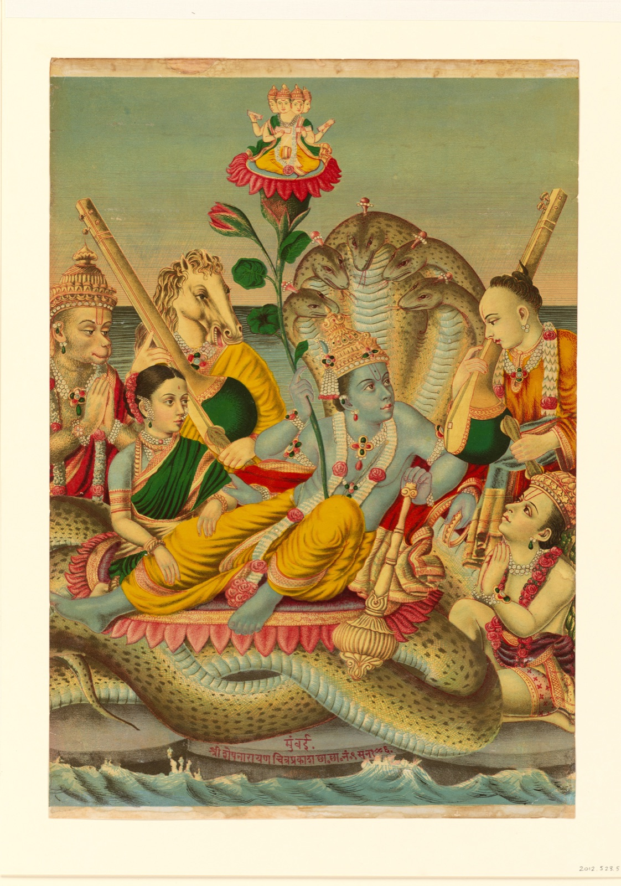

01 The Role of Myth
Human history is beautifully complex, shaped by migration, cultural exchange, shared ancestry, and the environments in which societies develop. Myths preserve this complexity by revealing how societies made sense of themselves and the world around them. These stories offer a rare window into intangible cultural heritage, carrying the values, memories, and ways of understanding that formal historical records often overlook. To study myths, therefore, is to trace the deeper history of human thought and the evolving relationship between people, their communities, and their surroundings.
These ways of understanding become visible in the stories themselves. In ancient Greece, the seasonal decline and renewal of vegetation took narrative form in Demeter’s grief during Persephone’s absence and the earth’s revival upon her return. Korean eclipse traditions interpreted the sudden darkening of the sun or moon through the Bulgae, fire dogs from a realm of darkness whose attempts to seize the celestial bodies temporarily obscured their light. Māori creation traditions placed the emergence of the natural world within a genealogy: when Tāne separated Ranginui, the sky father, from Papatūānuku, the earth mother, light entered the world, and their children became associated with its forests, seas, and other natural domains. Taken together, these traditions illustrate how myth made the cosmos socially meaningful, connecting environmental cycles and celestial events to human experiences of kinship, separation, struggle, and renewal.
These examples demonstrate that myths are not isolated explanations of the world, but cultural records continually shaped as people migrate, encounter other communities, and adapt inherited stories to new environments. Similarities among traditions may preserve traces of shared ancestry or historical exchange, while their differences reveal how societies reinterpret common ideas through distinct cultural experiences. This tension between continuity and transformation has made myth an important subject of historical and anthropological comparison. Previous research has therefore examined how geography, language, and cultural contact influence the distribution of stories—and how these overlapping forces complicate efforts to reconstruct their origins and relationships.
“Folklore is the boiled-down juice of human living.”
02 · The value of myth
Stories give elemental questions a form that can be lived with.
Again and again, the archive returns to moments when the world is still unfinished—before there is dry ground, before sky and earth have settled into their places, before fire belongs to human beings, and before death has become inevitable.

To read across these narratives is to watch a world that is alive at every scale. Some begin with water, and land is made to grow, rise, or be carried upward from the depths by a diving being. Others turn to the sky, giving the Sun and the Moon kinship and rivalry, and setting eclipses, distance, light, and darkness within an ordered cosmos. In a single mythological field, rain, stone, animal life, birth, and decay may belong together rather than to separate compartments of experience. In each case a landscape or a sky becomes a field of obligations, a place where human beings must learn how to live.
Other narratives move through kinship and transformation rather than through cosmology. A spouse may cross the boundary between animal and human; a trickster may expose, through misfortune, the cost of deception. Stolen fire, the first people, the origin of food plants, the animation of rocks and caves, and the emergence of life from beneath the earth all place human existence within a world that is already inhabited and already at work. Even mortality enters through narrative rather than as brute fact: a delayed message, an instruction altered in transmission, a messenger who arrives too late. An irreversible condition becomes an event with causes and consequences—something that can be questioned, remembered, and mourned. These recurring emphases are patterns in English-language catalogue descriptions, not fragments of one original story, universal stages of human thought, or categories authored by the communities themselves.
The value of these stories does not always depend on their remaining unchanged. Living traditions may be renewed when people give them new form under new circumstances—which is where the next difficulty begins.
03 · How myth is changing
Living traditions can endure through change; change is not the same as loss.
Every telling carries a past into a new present. A performer answers an audience; a family retells a story for a new generation; a community gives an inherited form new work to do. Variation is not automatically damage—more often it is evidence that a narrative is still in use.

It is worth dwelling on how a very old scene can reach us through a very modern object. A cosmological image first shaped in antiquity may reach us as a printed lithograph, a photograph, or a file, and in each case the medium changes how the scene can travel, who can encounter it, and what visual form it takes. This 1886 chromolithograph depicts Vishnu on the coils of the primordial sea serpent Shesha, with a lotus bearing Brahma and attendants around them. Its modern medium is part of its meaning: reproducible color print gave an inherited scene a new route through the world.
Migration, language shift, broadcast media, and digital circulation can carry stories to audiences far beyond the place of telling, and that reach can bring renewal, connection, and new participation. The same forces can also thin the context that gives a story its meaning. A narrative may become easier to find at the very moment its language, proper occasion, authorised teller, or cultural weight becomes harder to see.
Change can be creative adaptation, but it can also follow interruption, displacement, or loss; wider circulation is not the same as fuller understanding. The questions that matter are who shapes the change, what travels with the story, and what is quietly left behind. When the relationships that carry a tradition grow fragile, communities and institutions frequently turn to recordings, transcriptions, inventories, and catalogues in order to hold at least some of its traces within reach. That turn toward the archive is where this study’s material comes from, and it deserves to be examined closely.
04 · Preservation and cataloguing
A catalogue lets cultural traces travel through time—as selected traces.
Recordings, photographs, transcriptions, translations, indexes, and databases can outlive the encounters that produced them. They allow later generations to find dispersed material, and they make possible questions that no single reader could answer unaided.

What survives is always already a selection. A surviving fragment of an ancient narrative—a copied tablet, a transcribed performance—reaches us only through a long chain of human acts: inscription, recopying, collection, conservation, translation, and interpretation. Even then it preserves the text of a story rather than its full social life. Cataloguing works in the same way and with the same limits. Its particular gift is retrievability: an index gives a later reader a name to search for, a record to locate, and a means of recognising recurrence across a collection far too large to hold in the mind at once. It cannot stand in for a living tradition, and it should not be mistaken for one.
This study works with one such index. Twentieth-century folklore scholarship organised recurring tale types and motifs into large comparative systems, and the Berezkin–Duvakin Electronic Analytical Catalogue extends that lineage into digital form, drawing on a large body of published scholarship to record which narrative motifs have been associated with which catalogue entries. The analysis uses a single frozen export: 926 heterogeneous records, each tied to a reference point and a broad region, coded for the recorded presence or absence of 2,138 motif IDs. They are not 926 complete cultures, narratives, or bodies of tradition; they are selected traces, shaped at every stage by collection and classification. Holding that qualification in view is not a hedge. It is a precondition for reading the results honestly.
Text alternative
The map displays the same 926 records using three analytical overlays: sixteen broad regions, four exact-motif groups, and five provisional thematic groups.
A catalogue gives later readers something to find; in the same act, it gives them a particular way of seeing. Preservation and interpretation begin together—and that inseparability is where the research proper begins.
05 · The problem of representation
Every catalogue carries a point of view, and that point of view has consequences.
To classify is to choose a name, a unit, a language, and a boundary. Those choices make comparison possible in the first place; they also decide, in advance, which parts of a narrative will remain visible to everyone who comes later.
A catalogue record is not a transparent window onto an encounter. Names, captions, translations, and metadata frame what a later reader is able to retrieve and, just as importantly, what that reader believes they are seeing. Metadata does not simply label evidence; it interprets it. A motif title performs a comparable reduction, because it cannot carry tone, gesture, audience, disagreement, sacred restriction, or a teller’s reason for speaking, and because the editorial language of the catalogue—its choices of English wording—enters the record alongside the narrative it describes. What becomes searchable is genuinely valuable, but it is never identical to the source narrative or to the occasion of its performance.
“Each standard and each category valorizes some point of view and silences another.”
This is why a single technical detail of the dataset carries so much interpretive weight. A blank cell in the matrix means only that a given motif was not recorded in this frozen export; it does not prove that a community lacks the narrative, and uneven documentation must never be read as evidence that one tradition is richer, more complex, or more imaginative than another. The networks built in this study organise records within an archive; they do not classify cultures, and a motif remains a trace rather than the story itself.
Far from being a reason to abandon comparison, these limits sharpen the question the research is designed to answer. If representation shapes what we see, then the honest question is not “what is the true shape of world mythology?” but something more testable: which patterns survive when the meaning of similarity itself is changed?
06 · The findings
One archive, two readings, and one revealing fault line.
What the study does
A resemblance is a pattern to explain, not a history already proven.
The reasoning behind the study is an old problem in the comparative study of culture. When two records resemble one another, the resemblance may reflect shared ancestry, historical contact and borrowing, the movement of people, a common environment that invites similar stories, the recurrence of concerns common to human life, or some combination that a single observation cannot untangle. Cultural records are not independent, so similarity is never self-explaining. No network of catalogue entries can resolve those histories on its own. What comparison can do is identify resemblances robust enough to deserve further explanation.
The same 926 catalogue rows and source assignments remain fixed. They are then read through two fully specified analytical pipelines. One asks whether records share the same motif IDs; the other asks whether English motif titles and descriptions yield similar thematic profiles. The graph recipes also differ: the exact-motif reading retains every positive Jaccard connection, while the thematic reading uses a sparser twelve-neighbor cosine graph. Each receives a separately selected Leiden setting appropriate to its network. The comparison therefore shows what these two complete ways of constructing resemblance hold in common and where they diverge; it cannot attribute every difference to representation alone.
Two ways of measuring resemblance
The exact-motif network and the thematic network look at different scales.
The two readings are not rival guesses at one hidden truth. They are instruments trained on different levels of the same archive—one on recorded motif IDs, the other on aggregate lexical-semantic emphasis—and their value lies in comparing what each brings into focus.
In the exact-motif network, resemblance is the proportion of two records’ combined motif lists that the records share. “Primeval sky close to earth” and “Theft of fire” remain distinct catalogue elements, and records draw together only when the same motif ID was recorded in both. This reading preserves the catalogue’s distinctions; it does not recover original wording, performance, or a complete story.
In the thematic network, an unsupervised model condenses the English motif titles and glosses into fifteen recurring lexical-semantic factors, including provisional patterns labelled “Sun, Moon and eclipses,” “first people, plants and beings,” and “water, fish and aquatic beings.” Each record receives a profile across those factors, and records connect when their profiles are similar. These labels are analytical summaries, not community-authored categories, and remain candidates for human validation.
The exact-motif pipeline resolves the archive into four connected groups; the thematic pipeline resolves the same records into five. These are emphases within the frozen archive—not peoples, cultural stages, or bounded civilizations.
Text alternative
The exact-motif reading produces four connected groups. The provisional thematic reading produces five groups. Their large-scale structures overlap substantially but do not match.
What the comparison reveals
The two readings share a nonrandom but partial backbone.
The result falls neither at total agreement nor at total disagreement. Three large regions of the archive remain recognisable under both readings; one region does not survive the change of pipeline intact. Chance-corrected measures put the agreement in the substantial-but-incomplete middle: the adjusted Rand index is 0.3549 and adjusted mutual information is 0.3888. The two readings coassign 55,389 pairs of records, compared with 26,625.23 expected under fixed group sizes, producing an analytical z-Rand score of 151.11. None of 99,999 global permutations reached the observed agreement (p = 0.00001). A stricter comparison that shuffled labels within broad regions raised the expected agreement—the mean adjusted Rand index became 0.2075—but none of those permutations reached the observation either. Broad geography explains part of the backbone, not all of it.
In plain language, the two pipelines preserve some of the same structure within this frozen archive, but they do not make interchangeable classifications. Representation and graph construction matter, yet they do not dissolve everything the two readings hold in common.
Text alternative
Three exact-motif groups map strongly onto three thematic groups. The largest exact-motif group, B1, instead divides principally between thematic groups T2 and T4.
The fault line, read closely
One exact-motif group divides principally toward sky and world-order, or first beings and land.
The main disagreement is concentrated in the largest exact-motif group, B1, which contains 363 records. Under the thematic reading, 162 of those records enter T2 and 148 enter T4; the remaining 53 disperse among T1, T3, and T5. This is a principal two-branch division, not a clean transformation of one group into two equal halves. The primeval-water and earth-diver concentration belongs principally to a different correspondence, B4–T1, and should not be used to define B1.
The strongest contrast is thematic. Within B1, records entering T2 show greater relative emphasis on “Sun, Moon and eclipses” and “sky, earth and world structure.” Records entering T4 show greater emphasis on “first people, plants and beings” and “trees, rocks and climbing.” Four factor differences remain after labels are shuffled within broad-region and motif-count strata. Because these factors helped form the thematic groups, they characterise the split rather than independently validate it. They are contrasts in catalogue language, not evidence for “celestial peoples” and “terrestrial peoples.”
Geography sharpens the pattern and disciplines its interpretation. Ninety of the 148 B1 records entering T4 are located in the catalogue’s combined macroarea of Amazonia and Northern South America, while the B1 records entering T2 are distributed across several macroareas. Documentation differs as well: B1∩T2 averages 35.3 recorded motifs per record, compared with 61.1 for B1∩T4. Geography, documentation depth, and thematic pattern therefore remain entangled.
The individual motif results show why that caution matters. An initial comparison produced 232 differences; controlling for broad geography reduced the list to eight, and jointly accounting for region and documentation reduced it to zero. The aggregate thematic contrast is more robust than any catalogue-level motif claim. The networks generate hypotheses that can guide historical, linguistic, archaeological, ecological, ethnographic, and community-grounded research. They do not prove migration, borrowing, common ancestry, environmental cause, direction of transmission, or an original homeland.
What it means for scholarship
Representation and graph construction are part of the finding.
The central lesson is methodological, and it can extend beyond mythology. How a cultural archive is represented is not a neutral step completed before analysis begins; together with the graph recipe, it partly determines what the analysis can count as similarity. A paired design makes that claim testable rather than merely cautionary. It reveals both cross-pipeline structure and pipeline-dependent local organisation.
Substantial agreement does not make two classifications interchangeable. The places where careful measures agree in the aggregate while diverging in detail are exactly the places worth studying. The exact-motif and thematic readings are best understood as observations at two different levels of one cultural record: the catalogue’s recorded distinctions and the aggregate preoccupations inferred from its English descriptions. Neither is the culture itself.
Framed this way, the study offers a small model for responsible computational comparison in the humanities. It tests which cultural structures are stable across two specified pipelines; demonstrates that community agreement can be substantial without being interchangeable; distinguishes robust aggregate contrasts from context-sensitive individual motif results; and insists that geography and documentation depth be audited before historical claims are entertained. Its strongest conclusion is not that one method is superior. It is that a study that never questions its representation cannot know how much its conclusions depend on that choice.
Explore further: theme contrasts, geographic composition, group profiles, climate context, and latitude distributions.
07 · What it means for society
Similarity without sameness; difference without isolation.
Read carefully, the paired result resists two opposite ways of misunderstanding cultural difference—and the balance it strikes has consequences beyond a folklore catalogue.
The first is homogenisation, which turns culturally distinct narratives into interchangeable versions of a single universal story. It notices recurrence but forgets that meaning is carried through particular languages, landscapes, histories, relationships, and systems of knowledge. The second is fragmentation, which treats every tradition as sealed from every other and makes recurring human questions impossible to recognise. It defends difference by denying relationship.
The two readings, held together, keep both truths in view. Exact motif IDs protect the grain of recorded specificity. The thematic network can surface candidate echoes that exact labels would hide, pending human review. The study’s most durable offering is therefore not a finished map of world mythology but a way of asking which patterns remain stable, which depend on the lens, and what each representation leaves outside its frame.
That question is not confined to scholarship. Archives, search systems, classrooms, and automated systems all make decisions about what counts as “the same.” This study did not measure present-day technologies, so the implication is methodological: a system that collapses related material too eagerly can flatten distinct bodies of knowledge into generic content, while a system that recognises only exact wording can conceal meaningful relationships.
Responsible comparison should name its lens, preserve provenance and uncertainty, and return questions of meaning and authority to the communities whose knowledge is being represented. Computational patterns can point independent inquiry toward the places most worth examining. They cannot replace that inquiry, and they should never be mistaken for its conclusion.
The networks show where to ask, and where to listen, next. They do not decide what a story means.